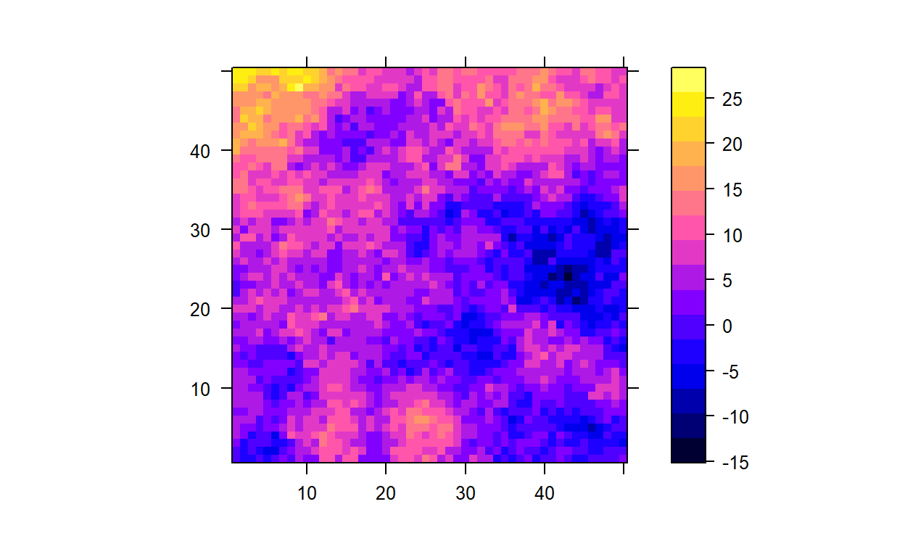

Week 6: Statistical inferential goals
ANTH 674: Research Design and Analysis in Anthropology
Professor Andrew Du
Introduction
This week’s lecture covered mostly theoretical and conceptual topics, so there aren’t many new methods and functions to learn. But, we can use R to illustrate how these concepts work in a concrete way using simulations.
To review, there are three main modes of statistical inference:
- Exploratory data analysis
- Confirmatory data analysis or hypothesis testing
- Prediction

These three modes have mutually exclusive goals, and you should never do more than one for a given question on a given set of data. Knowing which mode is the right one for your research question creates a clear path for you, regarding which analyses you should do and how you should do them. This knowledge also ensures that you will not abuse statistics and find an effect where one doesn’t exist in reality. All this is part of learning how to translate your research question into a statistical one, often the most difficult part of a research project!
After learning about these topics in lecture, this tutorial, and the HW, you should have a clearer understanding of the different modes of statistical inference and how to operationalize them in your own research.
I also realized that I never taught you how to save a plot as a PDF, so I will teach you how to do so in this tutorial. You will also learn how to write your own function, which comes in handy when you have to do the same thing over and over to different objects.
Goals for this tutorial
1) Continue the never-ending journey of familiarizing yourself with R.
2) Learn how to explore data using scatter plot and correlation matrices.
3) Learn how to save your plot as a PDF.
4) Learn how multiple comparisons increase the chance of committing a Type I error, and how to correct for this.
5) Learn how to write a function in R.
6) Learn how to cross-validate during prediction.
Exploratory data analysis
Exploratory data analysis (EDA) is done when one has very little idea about the patterns and relationships in the variables of interest. As a result, there is no a priori hypothesis that can be tested because we have no idea what the hypothesis should be!
EDA can be used to find relationships that serve as fodder for future hypotheses to be tested after the fact (i.e., a posteriori). The a posteriori nature of these relationships need to be emphasized because one can find a relationship just by chance, even though there is none in reality (i.e., the null hypothesis is true). Therefore, such relationships should not be presented as real and instead should be presented as preliminary hypotheses that need to be confirmed with independent datasets.
EDA is commonly accomplished by plotting variables (e.g., histograms and scatter plots for continuous data) and calculating simple descriptive statistics (e.g., mean, correlation coefficients). And as emphasized in lecture, never calculate P-values in EDA, as these can be significant by chance, especially if one is looking at many relationships. Not to mention, a P-value is an explicit statement about the data, assuming some hypothesis is true, so P-values don’t make much sense in EDA, as there are no hypotheses to be tested.

Scatter plot matrix
A scatter plot matrix is an excellent tool for EDA. To create a
scatter plot matrix, we are going to first simulate 6 independent,
unrelated variables, each of which has 20 data points. We can do this by
simulating 120 normal random variables (just use the default
mean and sd arguments) and placing them into a
matrix with 6 columns. Use set.seed(100), so your results
match mine. Can you figure out the code for all this (click the
“Solution” button if stuck)?
# click the "Solution" button if stuckn_var <- 6
n <- 20
set.seed(100)
x <- matrix(rnorm(n_var * n), ncol = n_var)
pairs(x)To create a scatter plot matrix, we use the pairs()
function. Go ahead and use the function on your matrix, and see what you
get.
The resulting plot shows a scatter plot between each pairwise combination of variables. For example, to see the scatter plot between var 1 and var 3, we find the plot that intersects the var 1 column and the var 3 row (third row, first column). This is a scatter plot with var 1 on the x-axis and var 3 on the y-axis. The other var 1 & var 3 scatter plot in the upper triangle (row 1, column 3) shows the same, but the axes are now swapped.
Because the upper triangle shows redundant information, we can
replace it with something more informative. In the pairs()
help file in the Examples section, there are additional
functions that can be used in scatter plot matrices:
panel.cor(): gives Pearson correlation coefficientspanel.hist(): plots histogramspanel.smooth(): creates scatter plots with a lowess smoother, which fits a flexible curve to your data
NB: you can add a lowess line to any scatter plot
with lines(lowess(x, y)).
Copy and paste the panel.cor() and
panel.hist() functions into your console
(panel.smooth() seems to be built in). Now we can change
the upper triangle to be correlation coefficients using the
pairs() argument upper.panel = panel.cor, and
we can make the diagonals histograms instead of variable names with the
argument diag.panel = panel.hist. Give this a try
below.
# click the "Solution" button if stuckn_var <- 6
n <- 20
set.seed(100)
x <- matrix(rnorm(n_var * n), ncol = n_var)
panel.cor <- function(x, y, digits = 2, prefix = "", cex.cor, ...)
{
par(usr = c(0, 1, 0, 1))
r <- abs(cor(x, y))
txt <- format(c(r, 0.123456789), digits = digits)[1]
txt <- paste0(prefix, txt)
if(missing(cex.cor)) cex.cor <- 0.8/strwidth(txt)
text(0.5, 0.5, txt, cex = cex.cor * r)
}
panel.hist <- function(x, ...)
{
usr <- par("usr")
par(usr = c(usr[1:2], 0, 1.5) )
h <- hist(x, plot = FALSE)
breaks <- h$breaks; nB <- length(breaks)
y <- h$counts; y <- y/max(y)
rect(breaks[-nB], 0, breaks[-1], y, col = "cyan", ...)
}
pairs(x, upper.panel = panel.cor, diag.panel = panel.hist)Correlation matrix
We can also quickly calculate a correlation matrix for our variables
using the cor() function.
I have written the code from before into the console below. Try out
cor(x).
n_var <- 6
n <- 20
set.seed(100)
x <- matrix(rnorm(n_var * n), ncol = n_var)cor(x)
cor(x, method = "spearman") # Spearman rank correlation matrix
library(Hmisc)
cor.res <- rcorr(x)
cor.res$r # Pearson correlation matrix
cor.res$P # P-value matrixThe correlation matrix is interpreted in exactly the same way as the
scatter plot matrix, in terms of finding the correlation coefficient
corresponding to two variables of interest (can you figure out why the
diagonals are all ones?). These are Pearson correlation coefficients by
default; if you want rank correlation coefficients, use the argument
method =.
We can see that the Pearson coefficient for var 3 and var 4 is fairly
high (0.56). To get the corresponding P-values for the correlation
matrix, we are going to use the rcorr() function in the
Hmisc package, so you need to install this package if you
don’t have it already
(install.packages("Hmisc", dep = TRUE)).
Load the package using library(Hmisc), and then use the
rcorr() function on the x matrix; save the
results to object cor.res.
cor.res$r brings up the correlation matrix, which you
already calculated above. cor.res$P brings up the
corresponding P-values. As you can see, there is only one significant
P-value: that comparing var 3 and var 4 (P = 0.01). But, we know that
this is a false positive, given that we simulated all these variables to
be unrelated, random normal variables.
EDA summary
You can find a significant, large correlation coefficient just by chance during EDA, even if the null hypothesis is true. This is especially likely if you conduct many tests. Thus, you should always be skeptical of high correlation coefficients during EDA and only present them as intriguing hypotheses that need to be tested with independent datasets.
That said, the probability of getting a large, significant correlation coefficient (or some other test statistic) is 5% if the null hypothesis is true. So if you calculate 20 correlation coefficients and find 15 are very large, you’re likely onto something real, as getting 15 large coefficients by chance is miniscule (assuming all null hypotheses are true, the probability of getting 15 or more significant tests by chance is \(3.7 \times 10^{-16}\)).
Saving a plot as a PDF
It’s nice to see plots in RStudio while you’re playing around with data, but you need to learn how to save them as PDFs if you want to finalize plots for presentations, publications, etc. Plots within R look pixelated, but that gets smoothed out when they’re saved as a PDF.
Saving a plot as a PDF is easy in R. Here are the steps involved:
Use the
pdf()function to begin the saving process. The only arguments I consistently use arefile =,width =, andheight =.file =specifies the directory path for where you want to save the file to (make sure you end with the PDF file name and.pdf!). For example,pdf("C:/Users/adu/Desktop/Test plots.pdf").width =controls the width of the plot (default is7for seven inches)height =controls the height of the plot (default is7for seven inches)
Create one or more plots. If you create multiple plots, each one will be saved on a different page within your PDF file.
Tell R you’re done saving to the PDF with
dev.off().
By using pdf() and writing down the file directory path
and file name, you’re also creating a written record of what plots
you’re creating, where you’re saving them to, and what the file name(s)
is.
The default PDF plot dimension is a 7in x 7in square. To preview what
your plot looks like in this dimension, you can enter
windows() (for PC) or quartz() (for Mac) to
create a blank, square plotting screen. Then, you can create your plot
and see what it looks like! You can create as many plotting windows as
you’d like, which is great for comparing plots.
NB: These functions are kind of wonky in the tutorial (though give it a shot) and definitely wonky in RMarkdown. Use them primarily in R scripts or when working in your R console.
Try saving two plots as a PDF below. That is, create two plots (whatever you’d like) as two separate pages in a saved PDF file.
Confirmatory data analysis
The second statistical inferential mode we covered is confirmatory data analysis (CDA) or hypothesis testing. This mode is used when you want to test an a priori hypothesis with confidence intervals or P-values (in fact, CDA is the only time you should ever calculate a P-value!). A priori means you specified the hypothesis before you saw the data.
A priori hypotheses can come from intuition, theory, or previous exploratory analyses. For the third, you need to test the hypothesis with a dataset that is independent from the one used to discover the hypothesis (accomplished via EDA).
We have previously covered how to calculate P-values and confidence intervals, so the following topic will cover how we deal with multiple comparisons (i.e., when many tests are conducted).

Multiple comparisons
As mentioned previously, the more tests you run, the more likely you’ll find a large, significant statistic just by chance. More precisely, on average, 5% of your tests will be significant, assuming the null hypothesis is true for all tests. Therefore, it is common practice to correct your significance level or P-values if you conduct many tests.
Bonferroni correction
This is the most common method, but it is also problematic for a number of reasons, which I’ll discuss in the next section.
As I covered in lecture, Bonferroni corrections adjust the family-wise error rate (FWER), which is the probability of committing at least one Type I error within a set of tests. Specifically, Bonferroni corrects FWER to be 0.05, assuming the null hypothesis is true for all tests. It creates a new significance level (\(\alpha_{BC}\)), defined as \(\alpha_{BC} = \alpha / k\), where \(\alpha\) is the traditional 0.05 significance level and \(k\) is the number of tests conducted.

In R, we can use the p.adjust() function with argument
method = "bonferroni to automatically calculate
Bonferroni-corrected P-values. Let’s do so using our six variables from
before. I have written the code for you, and the P-values are saved as
object p.vals. Use p.adjust() on
p.vals below.
n_var <- 6
n <- 20
set.seed(100)
x <- matrix(rnorm(n_var * n), ncol = n_var)
cor.res <- rcorr(x)
p.vals <- cor.res$P[lower.tri(cor.res$P)]
# lower.tri() is a function to get the lower triangle from a matrix.
# upper.tri() gets the upper trianglep.adjust(p.vals, method = "bonferroni")You can see that none of the P-values are now significant, which is the correct result, given that these variables are simulated to be unrelated to each other.
Issues with Bonferroni
As taught in lecture, Bonferroni is overly conservative because it assumes the null hypothesis is true for ALL of your tests, which is likely to be false. This means that all tests are considered to contribute to the FWER, and all need to be corrected (even if the null hypothesis is false in reality for some tests). As a result, the probability of committing a Type I error has certainly decreased, but the probability of committing a Type II error (failing to reject the null if it’s false) has increased. This is okay if your research question dictates that you should be very conservative about making statements about statistical significance, but a Type II error is still an error.
Let’s see how Bonferroni plays out when some pairwise correlations between variables are NOT zero in reality.
We are going to simulate a large dataset with 100 variables, each of
which has 20 data points. 50 variables are going to be random,
uncorrelated normal variables, and the other 50 are going to be
correlated with each other. Therefore, we know that the null
hypothesis is actually false for 1225 tests. (To calculate the number of
pairwise combinations possible from 50 variables, we use the binomial
coefficient; the R code is choose(50, 2)). I have provided
the code for this below.
x is the object with all the variables and data points.
Use rcorr() to get the P-values from the correlation matrix
(refer to the code above; you can click the “Solution” button if you get
stuck).
n_var <- 50
n <- 20
set.seed(1)
x1 <- matrix(rnorm(n * n_var), ncol = n_var)
set.seed(1)
y <- rnorm(n)
set.seed(1)
x2 <- apply(x1, 2, function(x) 1.5 * y + rnorm(n))
x <- cbind(x1, x2)cor.res <- rcorr(x)
p.vals <- cor.res$P[lower.tri(cor.res$P)]
sum(p.vals <= 0.05)
p.bon <- p.adjust(p.vals, method = "bonferroni")
sum(p.bon <= 0.05)How many P-values are significant? Is this too high? Now apply the Bonferroni correction to the P-values and count the number of P-values that are less than 0.05.
There are now 94 significant P-values, but we know that there should be 1225 because we simulated our data that way. This shows that only 8% of tests are correctly identified as significant, which is very low (lots of Type II error)! This illustrates the overly conservative nature of the Bonferroni correction. A less conservation correction is the Benjamini-Hochberg procedure, which is covered next.
Benjamini-Hochberg correction
Instead of correcting the FWER, Benjamini-Hochberg corrects the false discovery rate (FDR). The FDR is the proportion of false positives in one’s set of significant P-values (i.e., falsified null hypotheses). Therefore, Benjamini-Hochberg is less conservative than Bonferroni because not all tests are penalized and corrected; only those that are significant are considered.

Refer to the lecture to see how the Benjamini-Hochberg correction is
computed. Here, we will only use the p.adjust() function
with argument method = "BH". I have written out the code
for our simulated dataset from before. Now apply the Benjamini-Hochberg
correction and count how many P-values are significant.
n_var <- 50
n <- 20
set.seed(1)
x1 <- matrix(rnorm(n * n_var), ncol = n_var)
set.seed(1)
y <- rnorm(n)
set.seed(1)
x2 <- apply(x1, 2, function(x) 1.5 * y + rnorm(n))
x <- cbind(x1, x2)
cor.res <- rcorr(x)
p.vals <- cor.res$P[lower.tri(cor.res$P)]p.bh <- p.adjust(p.vals, method = "BH")
sum(p.bh <= 0.05)There are 1165 significant P-values, much closer to the true value of 1225 but still not perfect.
You can see how the Benjamini-Hochberg does a much better job of correcting P-values if the null hypothesis is actually false for some of your tests (which is likely to be the case). Therefore, I recommend using Benjamini-Hochberg over Bonferroni when you need to correct P-values for multiple comparisons. The best solution of all, however, is to not calculate so many P-values in the first place.
Exercise 1: Scatter plot matrices & multiple comparisons
We are going to use our trusty mtcars dataset for this
exercise.
First, subset out the continuous variables in the dataset (hint: there are six in total).
Next, create a scatter plot matrix, where the lower triangle is scatter plots with a fitted lowess curve, the diagonals are histograms, and the upper triangle is Pearson correlation coefficients.
Calculate a Pearson correlation matrix with corresponding P-values (you’ll need to transform your data frame into a matrix first).
Count how many P-values are significant and then use a Bonferroni and then Benjamini-Hochberg correction on your P-values. How many P-values are less than or equal to 0.05 after each correction?
# Click "Solution" button when done# Q1
mtcars1 <- subset(mtcars, select = c(mpg, disp, hp, drat, wt, qsec))
# Q2
## First, copy & paste panel.hist & panel.cor functions from pairs help file
panel.hist <- function(x, ...)
{
usr <- par("usr")
par(usr = c(usr[1:2], 0, 1.5) )
h <- hist(x, plot = FALSE)
breaks <- h$breaks; nB <- length(breaks)
y <- h$counts; y <- y/max(y)
rect(breaks[-nB], 0, breaks[-1], y, col = "cyan", ...)
}
panel.cor <- function(x, y, digits = 2, prefix = "", cex.cor, ...)
{
par(usr = c(0, 1, 0, 1))
r <- abs(cor(x, y))
txt <- format(c(r, 0.123456789), digits = digits)[1]
txt <- paste0(prefix, txt)
if(missing(cex.cor)) cex.cor <- 0.8/strwidth(txt)
text(0.5, 0.5, txt, cex = cex.cor * r)
}
pairs(mtcars1, lower.panel = panel.smooth, diag.panel = panel.hist, upper.panel = panel.cor)
# Q3
mtcars.cor <- rcorr(as.matrix(mtcars1))
# Q4
p.vals <- mtcars.cor$P[lower.tri(mtcars.cor$P)]
sum(p.vals <= 0.05) # 13
sum(p.adjust(p.vals, method = "bonferroni") <= 0.05) # 10
sum(p.adjust(p.vals, method = "BH") <= 0.05) # 13Prediction
The third and final mode of statistical inference is prediction, which involves fitting a model to data to predict unknown DV, given the known IV in a new dataset. Because the goal of prediction is to predict DV in a new dataset, it is important that we quantify how well our model does on data that wasn’t used to fit the model.
The training dataset is the dataset used to fit the model, and the test dataset is an independent dataset with known IV and DV, used to assess how well the training model predicts DV in new data. This process is known as cross-validation.
You always need to cross-validate when doing prediction. This is because fitting a model to data always involves some noise being fit instead of signal. This is known as overfitting.

If the new dataset you want to predict on has a different noise structure than your training dataset (as is likely), then an overfit model will perform poorly on the new dataset. This is why it is so important that your test dataset is as independent from your training dataset as possible; that is, your independent test dataset mimics the new (likely independent) dataset you want to ultimately predict on. If truly independent, a test dataset with known IVs and DVs will give an honest assessment of how well your trained model does on new data, which is the ultimate goal of prediction.
Writing functions
Key in assessing how well a model does during prediction are two
statistics: \(R^2\) and
root-mean-square error (RMSE). We are going to learn how to write our
own functions to calculate these before we use them in cross-validation.
But first, let’s illustrate how functions are written with a simple
example (you’ll see many parallels with writing a for()
loop).
Imagine we wanted a function that multiplies every element within a vector by two. Here are the steps for writing that function (click the “Solution” button if stuck).
- Figure out what you want to call your function; this becomes the
“object” name (e.g.,
times2 <-). - Assign to this name a function called
function(), whose arguments will become the arguments that go into your function. In this case, we have only one argument: the vector whose elements we multiply by two (e.g.,times2 <- function(x)). - Type an open curly brace (
{) right afterfunction(). - On the next line, code what you want done with your arguments (e.g.,
our vector
x). In this case, we want to multiply each element by two (x * 2) and save this to an object. - Now we need to bring our results object out of “function space”; we
do so using the
return()function, whose argument is the object we want to return. - Enter a closed curly brace on the next line (
}).
# Click "Solution" button if stucktimes2 <- function(x){
res <- x * 2
return(res)
}Congratulations, you just wrote your first function! With your coded
function in the R system, you can use times2() just as you
would with any other function. Try times2(1:10) and see
what you get.
Now let’s write our own functions for \(R^2\) and RMSE.
Writing functions: \(R^2\)
You might be thinking why do we need to write our own \(R^2\) function when we can easily compute this statistic using R’s built-in functions? R calculates \(R^2\) given an inputted IV and DV. For cross-validation, however, we want to calculate \(R^2\), given observed DV from the test dataset and predicted DV when the test IV is input into the training model.
The formula for calculating \(R^2\) is:
\[\begin{align} R^2 = 1 - \frac{SS_{res}}{SS_{tot}}, \end{align}\]
where \(SS_{res}\) is the residual sum of squares (i.e., DV variation unexplained by the model) and \(SS_{tot}\) is the total sum of squares (i.e., total variation in the DV). \(SS_{res}\) is defined as:
\[\begin{align} SS_{res} = \sum_{i=1}^{n} (y_i - \hat{y_i}) ^ 2. \end{align}\]
In English, subtract model-predicted DV from observed DV, square the elements, and then sum them all up.
\(SS_{tot}\) is defined as:
\[\begin{align} SS_{tot} = \sum_{i=1}^{n} (y_i - \overline{y}) ^ 2. \end{align}\]
In English, subtract mean DV from observed DV, square the elements, and then sum them all up.
Equations are great for coding because each math symbol corresponds
to an R function (e.g., sigma translates to sum()).
See if you can code the function for computing \(R^2\), given the equations above (click the “Solution” button if stuck). You’ll need two arguments this time: one for observed DV and another for predicted DV.
# click the "Solution" button if stuckR2 <- function(obs, pred){
rss <- sum((obs - pred) ^ 2)
tss <- sum((obs - mean(obs)) ^ 2)
return(1 - rss / tss)
}
x <- runif(20)
y <- 2 * x + rnorm(20)
lm.res <- lm(y ~ x)
R2(y, lm.res$fitted.values)
summary(lm.res)$r.squared # it's the sameSimulate two linearly related variables and use your function to calculate \(R^2\) (you’ll have to fit a linear model first to get the predicted DV). Then double-check your function against the way you “normally” calculate \(R^2\) using R.
Writing functions: root-mean-square error
Root-mean-square error (RMSE) is a useful statistic for quantifying the deviation between your model predictions and observed DV. The formula is:
\[\begin{align} RMSE = \sqrt{\sum_{i=1}^{n} \frac{(y_i - \hat{y_i})^2}{n}}. \end{align}\]
In English, subtract predicted DV from observed DV, square the elements, sum the elements and divide by vector length (i.e., calculate the mean), and then calculate the square-root of the whole thing.
See if you can code the function below. Again, you’ll need two arguments: one for observed DV and another for predicted DV. You can click the “Solution” button if you’re stuck.
# Click "Solution" button if stuckrmse <- function(obs, pred){
sq.resid <- (obs - pred) ^ 2
mean.sq.resid <- sum(sq.resid) / length(sq.resid)
return(sqrt(mean.sq.resid))
}Cross-validation
Two common methods used for cross-validation are the holdout
method and k-fold cross-validation.
k-fold cross-validation is basically the holdout method
repeated k times (i.e., with a for() loop), so we
will learn cross-validation using the simpler (but still effective)
holdout method.
To learn how to cross-validate, we’re going to practice on a
spatially autocorrelated raster. The code for this is adapted from
this site (you will need to install the gstat and
sp packages first, using
install.packages()).
This is what the DV looks like:

The IV and DV are in a dataframe called AC, which also
has the x and y coordinates (x and y,
respectively). This dataset is preloaded into your console below.
Let’s do a 75-25 holdout, where 75% of the dataset is used for training and 25% is used for testing. This is typically done by randomly sampling 75% of the data points from one’s dataset (with the remaining 25% for testing), but we know from lecture that this strategy is fraught when the data are autocorrelated (here is a good article illustrating the problem and here is a good YouTube video). This is because the underlying autocorrelation structure of the training dataset will be present in the test dataset, such that these two datasets are not truly independent. This means any assessment of the predictive abilities of our model will be overly optimistic: the test dataset is too similar to the training dataset, but any dataset we ultimately want to predict on will likely be very different from our training dataset (i.e., the autocorrelation structure will be different). To address this issue with spatial autocorrelation, we want to designate a segregated corner of the map as the test dataset.
- Let’s use the bottom-right corner of the dataset (i.e.,
x >= 25andy <= 25). Subset out these data for your test dataset, and the remainder will be the training dataset. - Then fit a linear model to the IV and DV in the training dataset.
- Use the training linear model to predict the test DV, given its IV
(hint: use the
predict()function). - Now use your created \(R^2\) and RMSE functions to calculate these statistics (I’ve included the code in the console below), using observed test DV and predicted test DV (from the training model) as your two arguments.
- That’s it! You can also compare your calculated \(R^2\) and RMSE to those calculated using the training dataset and model. Click the “Solution” button if stuck.
R2 <- function(obs, pred){
rss <- sum((obs - pred) ^ 2)
tss <- sum((obs - mean(obs)) ^ 2)
return(1 - rss / tss)
}
rmse <- function(obs, pred){
sq.resid <- (obs - pred) ^ 2
mean.sq.resid <- sum(sq.resid) / length(sq.resid)
return(sqrt(mean.sq.resid))
}test.index <- AC$x >= 25 & AC$y <= 25
train.index <- !test.index
train_AC <- AC[train.index, ]
test_AC <- AC[test.index, ]
# fit linear model to training dataset
lm.train_AC <- lm(DV ~ IV, data = train_AC)
# use training model to predict test dataset's DV, given its IV
test.pred_AC <- predict(lm.train_AC, data.frame(IV = test_AC$IV))
# Calculate R2 and RMSE using observed test DV and predicted test DV from training model
R2.test_AC <- R2(test_AC$DV, test.pred_AC)
rmse_test_AC <- rmse(test_AC$DV, test.pred_AC)
# Calculate R2 and RMSE of training model and training data for comparison
summary(lm.train_AC)$r.squared
rmse_train_AC <- rmse(train_AC$DV, lm.train_AC$fitted.values)As you can see the \(R^2\) using the observed and predicted test DV is horrible (in fact, it’s negative which means mean DV explains more variation than the model!). RMSE increased relative to that calculated using the training dataset and training model. Though these numbers might be somewhat depressing, they are an accurate assessment of how well our model does on new data with an autocorrelation structure not found in the training dataset. We need to work harder on building a better model or getting better data!
Exercise 2: Cross-validation
I have simulated an IV (x) and DV (y) with
temporal autocorrelation in the latter; that is, you can think of these
variables as time series, where data points are chronologically ordered.
These two objects are already loaded in the tutorial console and are
found in a data frame called d.
I want you to use \(R^2\) and RMSE to assess how well your fitted model will predict DV in a new dataset.
First, plot the data using a scatter plot.
Let’s use a 75-25 holdout again for cross-validation. How should the dataset be divided up into training and test datasets?
Fit a linear model to the training dataset and predict DV in the test dataset. Calculate \(R^2\) and RMSE (these functions are already loaded in the console). You can compare these statistics to those calculated on the training dataset and training model.
# Click the "Solution" button when done# Q1
plot(d$x, d$y)
# or
plot(d)
# Q2
# Can take the first or last 25% of data
train.index <- 1:(.75 * nrow(d))
test.index <- (.75 * nrow(d) + 1):nrow(d)
train.d <- d[train.index, ]
test.d <- d[test.index, ]
# Q3
train.lm <- lm(y ~ x, data = train.d)
pred.test.y <- predict(train.lm, data.frame(x = test.d$x))
R2(test.d$y, pred.test.y) # -0.19 but essentially zero
rmse(test.d$y, pred.test.y) # 43.97
# using training model and dataset
summary(train.lm)$r.squared # 0.72
rmse(train.d$y, train.lm$fitted.values) # 36.55Conclusion
In this tutorial, we have gone over the three main inferential goals in statistics: exploratory data analysis, confirmatory data analysis (or hypothesis testing), and prediction. These three are mutually exclusive, and you only ever get to do ONE for a given research question and dataset. As you have seen in lecture and this tutorial, each one requires a different mindset and set of statistical techniques. As a result, knowing which statistical goal is right for your question effectively creates a road map for how you should conduct analyses and interpret, present, and write up results. For what it’s worth, I think 70% of my research has been exploratory, 20% confirmatory, and 10% prediction.
Mastering these topics is part of the very important skill set of translating a research question into a statistical question. This is often the most difficult part of research, and as John Tukey said, “Finding the question is often more important than finding the answer.” Most papers I read (in paleoanthropology) conflate statistical goals, the most common being masquerading exploratory as confirmatory analyses. This is not done consciously or maliciously but is most likely due to the fact that researchers never learned what the distinct statistical goals are and how they’re carried out. As a result though, I bet a lot of the findings in our field our false positives and not replicable. Be part of the positive change and clearly delineate these goals in your own research!